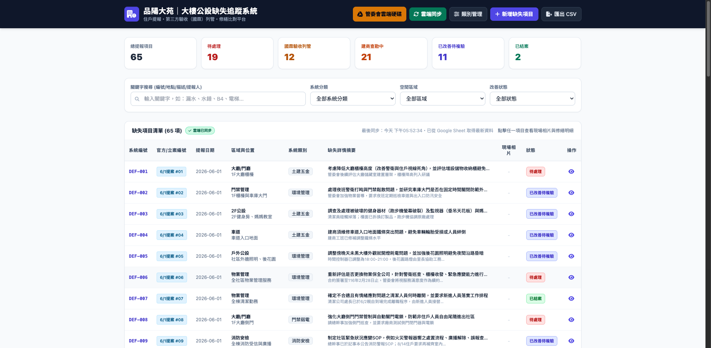
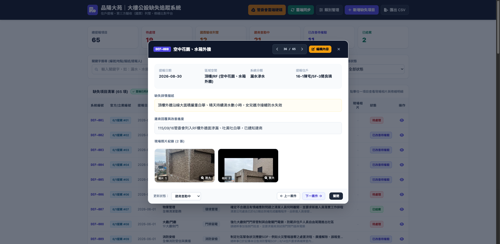
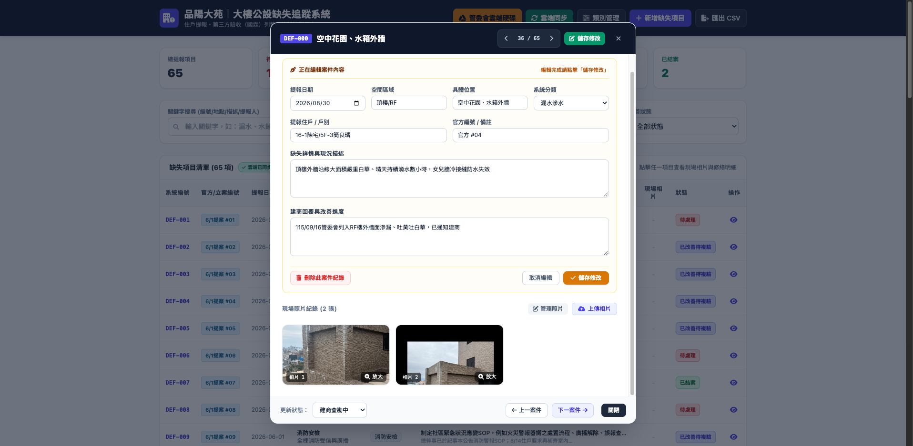
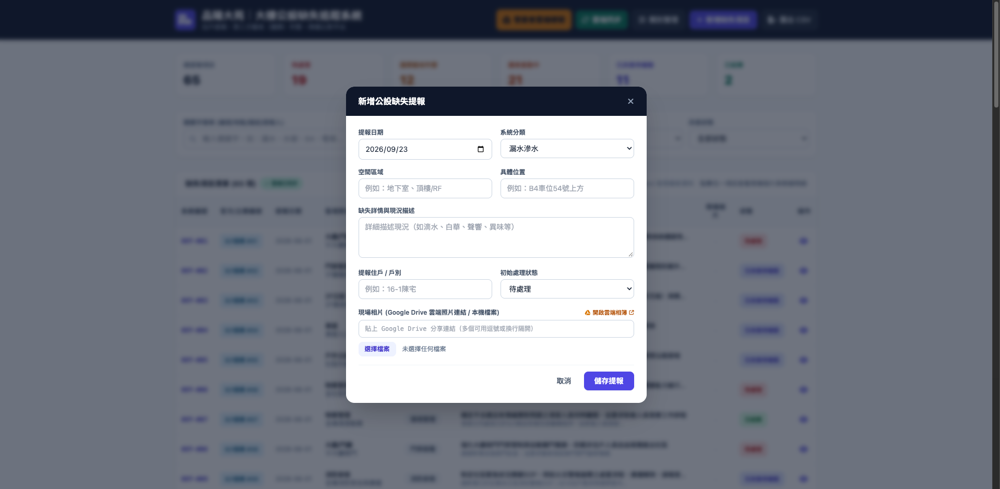
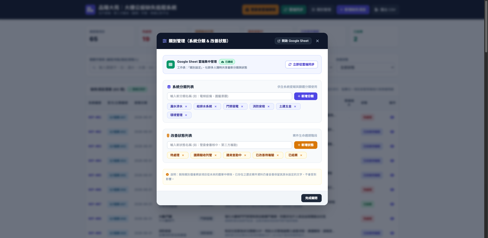

系統宗旨：專為品陽大苑管委會、全體住戶及第三方公設查驗團隊（國霖機電）打造之公設瑕疵管制作業平台。系統整合了住戶提報、現況照片留證、缺失修繕進度追蹤，並直接連動 Google 雲端試算表與雲端硬碟，達到無死角的多人即時協作。
1. 系統首頁與全域總覽 (Dashboard)
進入系統後，頁面由頂部控制導覽列、中間狀態儀表卡片 (KPI)、多維度複合篩選列以及缺失項目清單總表四大區塊組成：

▲ 圖 1：品陽大苑缺失追蹤系統首頁架構（頂部功能鍵、KPI統計、即時篩選與案件總表）
主要操作區塊說明：
- 頂部狀態列：
- 管委會雲端硬碟：一鍵快速直達管委會 Google Drive 存證資料夾。
- 雲端同步：強制自 Google Sheet 抓取全社區最新提報缺失與類別設定。
- 類別管理：增刪或微調系統分類標籤與修繕進度狀態。
- 新增缺失項目：開啟快速表單登記現場新瑕疵與上傳照片。
- 匯出 CSV：一鍵匯出當前所有篩選結果為 Excel/CSV 檔案供管委會會議彙報。
- KPI 即時卡片：即時統計總提報項目數（如 65 項），以及「待處理」、「國霖驗收列管」、「建商查勘中」、「已改善待複驗」、「已結案」之分項件數。
- 多維度篩選工具：支援「關鍵字搜尋（案號/位置/描述/提報人）」、「系統分類」、「空間區域」及「改善狀態」之即時即打即顯交叉比對。
2. 雲端同步機制與更新差異解析
系統採用現代化單一真實來源 (Single Source of Truth, SSOT) 架構，讓網頁與 Google Sheet 試算表達成無縫自動連線：
| 操作方式 |
觸發機制與運作流程 |
適用情境與主要效果 |
| 開啟網頁 / 按 F5 重新整理 |
網頁載入時，底層在背景自動以無痕方式連線 Google Sheet API，自動拉取最新 65 筆資料並更新表格。 |
平常每日查看最新狀況、或者前端介面有程式碼改版時使用。 |
| 點擊頂部「雲端同步」按鈕 |
強制跳過瀏覽器所有本地快取，即時抓取 Google Sheet「公設缺失清單」與「類別設定」雙工作表。 |
其他委員或建商剛在 Google Sheet 後台編輯完畢，你想立刻無延遲看到最新紀錄與照片張數時。 |
3. 案件詳情檢視與照片放大 (Detail Modal)
在總表中點擊任一案件列或右側 檢視 圖示，即可開啟案件詳細修繕資訊窗：

▲ 圖 2：案件修繕履歷檢視窗（含提報人、官方追蹤編號、改善進度及現場存證相片輪播）
- 案件定位切換：可點擊頂部「上一案」、「下一案」快捷鍵在同篩選結果內循序切換，無須頻繁進出。
- 照片輪播與燈箱放大：點擊現場相片縮圖即可呼叫全螢幕高清燈箱，支援手機左右滑動手勢與鍵盤切換，方便現場會勘細節辨識。
- 改善進度追蹤：清楚記載建商目前修復處置作為、工班施作進度或第三方查驗結論。
4. 案件內容編輯與相片雲端管理
在詳情窗點擊右上方 編輯內容 按鈕，介面會切換至雙欄編輯工作台：

▲ 圖 3：案件編輯模式（左欄修改缺失與回覆、右欄支援本機照片上傳、剪貼簿直貼與快速刪除）
現場照片增刪與剪貼簿貼上功能：
- 1從剪貼簿直接貼上相片（快捷鍵最強大）：只要在 LINE、電腦截圖工具或手機截圖按下「複製」，在案件編輯工作台視窗中直接按下鍵盤
Ctrl+V（Windows）或 Cmd+V（Mac），或點擊「貼上剪貼簿相片」按鈕，截圖即刻轉換為預覽圖片，無須另存檔案！
- 2電腦/手機本機選取檔案：點擊「上傳相片」選取拍攝圖檔，系統會於前端進行智慧等比壓縮（最長邊 1600px，兼具清晰畫質與極速傳輸）。
- 3刪除相片：滑鼠懸停於照片右上角垃圾桶或點擊「管理照片」即可單張清除；亦可「全部刪除」。
- 4雙向寫入雲端：點擊右下角「儲存修改」後，新上傳或貼上的照片會自動同步至 Google Drive 雲端資料夾，並將直連網址寫入 Google Sheet 第 K 欄，跨裝置即刻一致同步。
刪除案件保護：左下角設有「刪除此案件紀錄」功能，僅供誤報或完全無效案件使用。點擊後系統會跳出確認警告，確認後將同步從網頁及 Google Sheet 徹底抹除該筆紀錄。
5. 新增公設缺失作業流程 (Create Defect)
當巡檢人員或住戶在公共空間發現新瑕疵時，點擊頂部 + 新增缺失項目 開啟表單：

▲ 圖 4：新增缺失表單（支援自動編號、樓層空間、瑕疵描述、剪貼簿直貼與選檔預覽）
- 系統編號：系統依現有資料庫自動流水編排（例如目前最新為
DEF-066）。
- 空間與位置：詳列「空間區域」（如地下室、頂樓/RF、梯廳）與「具體位置」（如 B2停車場15號車位旁連續壁）。
- 系統分類：選定主要瑕疵性質（漏水滲水、給排水系統、門禁弱電、消防安檢、土建五金、環境管理）。
- 現場相片上傳與剪貼簿貼上：
- 可直接點擊「貼上剪貼簿相片 (Ctrl+V)」或直接按快捷鍵貼入 LINE 中的報修截圖。
- 亦可點選本機圖檔，下方會立即呈現縮圖預覽並提供刪除叉叉，確認無誤後點擊「儲存提報」即自動上傳登錄。
6. 系統分類與改善狀態自訂管理 (Configuration)
點擊頂部 類別管理 按鈕，管委會委員可隨時依社區需求自訂分類標籤：

▲ 圖 5：類別與狀態管理視窗（自訂各項工程分類標籤與流程狀態）
- 動態擴充：可隨時新增例如「景觀植栽」、「公設弱電」等新類別，或調整自訂狀態流程。
- 雲端雙向同步：所有類別異動均同步記錄至 Google Sheet 試算表之「類別設定」工作表中，其他裝置重整後同步生效。